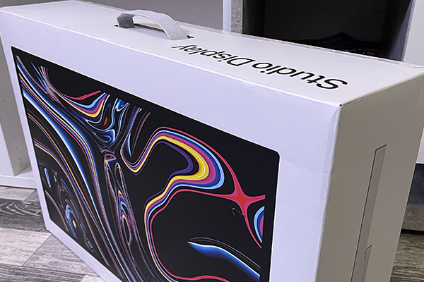
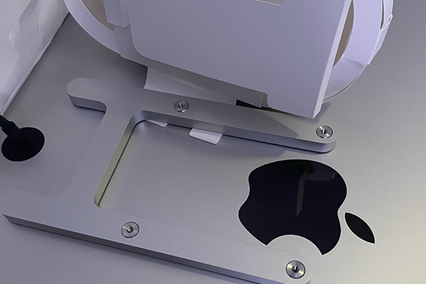

Apple Studio Display Product Review ▮▪
Today, I’m writing a slightly different type of article than usual. I want to start sharing more about my work trips on my website what I’ve experienced, the projects I’ve worked on, and the places I’ve created them in. But I also really enjoy sharing reviews of products I actively use. For the first one, I chose a product I bought about half a year ago.
It’s the Apple Studio Display, which I had been eyeing for quite some time. I’ve been a fan and user of Apple products since I was around 15, when I got my first iPhone 3GS. I currently work on a 16-inch MacBook Pro 2023, and one of the things I absolutely love about this technology is the display. The Retina screen is a feast for the eyes. Recently, I had been connecting my work MacBook to a Dell monitor, and the “unrealistic” colors really bothered me overall, it felt like a huge downgrade.
I didn’t own a high-end monitor before, and I believe things would have been much better with my new MSI monitor, which I recently bought. However, I had been eyeing the Studio Display for a long time, though I hesitated because the price is quite steep for “just a display.” Apple offers two versions the first starts at around 42,000 CZK, while the second, the XDR variant, is priced around 133,000 CZK… yes, that much money for a monitor!
I went for the cheaper version, which still offers plenty of features I knew I’d appreciate. Another requirement for me was a VESA mount, so I could adjust the display position freely when needed. The advantage here is that the display can also be rotated vertically, depending on how you position the monitor similar to how it works on an iPad.
So, I purchased the Studio Display with the VESA mount version and started using it actively. The VESA mount itself must be bought separately, as it’s not included in the box. Now, after six months of use, I can share my opinion on this product.
One thing I really like and one of the main reasons I decided to buy it is that the Delta E value is below 1!
What does Delta E mean? Simply put, it measures how closely the displayed color matches the color perceived by the human eye. This means you won’t have the issue of working on graphic projects where colors look one way on your screen, but after export, they appear different to your client. The quality and accuracy of delivered work are essential for me, and that’s why I see this as one of the biggest advantages.
The brightness range reaches up to 600 nits, making it perfectly visible in all lighting conditions. Apple mainly designed this product for home, office, or studio use. You can easily adjust the brightness as needed it even reacts automatically depending on whether it’s day or night. The True Tone feature is, of course, included.
When I plan a videocall, I don’t need to open my MacBook the Studio Display has a 12 MP ultra-wide camera with Center Stage. To be honest, I have to say that for a display in this price range, the camera quality could be better, but for regular video calls, it’s perfectly fine for me. Another great feature is that the built-in microphones isolate your voice while suppressing background noise.
The monitor also comes with six built-in speakers that support spatial audio, so any movie or music sounds absolutely fantastic.

The display is 27 inches, has 14.7 million pixels, and offers 5K resolution. As I mentioned earlier, I have absolutely nothing to criticize about the display itself it’s one of the main reasons I wanted to switch to it. The colors are simply incredible.
The Studio Display is equipped with its own A3 chip, which also receives regular updates. It’s possible that Apple may roll out future improvements, so I recommend checking for updates regularly. On the back of the monitor, you’ll find three USB-C ports and one Thunderbolt port, through which you can also charge your MacBook. However, note that this may not apply to all MacBook models I recommend checking compatibility before purchasing.
The Studio Display is mainly designed for Apple devices, but it can be connected to a Windows PC as well. I actually looked into some tutorials on how to connect a gaming PC to the display to enjoy that resolution for gaming, too. Unfortunately, there are quite a few limitations in terms of what features won’t work but it is possible. I haven’t personally tried it yet, but maybe I will in the future. For now, I use this display primarily for work, and that’s how it will stay. For gaming, I use my MSI monitor, specifically the G32CQ4 E2 model.
So, what’s the final verdict?
In my opinion, the Studio Display is absolutely worth it if you already own Apple products and actively work with them. Do you regularly edit photos or videos? This display will make your workflow significantly more enjoyable. Personally, my eyes don’t get tired as easily when using it, since it adapts to the surrounding light conditions. For graphic design work, it’s also a fantastic choice. If you’re looking to invest in a device that will serve you for many years, you really can’t go wrong with this one.
However, if you’re considering buying it and your daily tasks mostly involve emails, office work, and the occasional vacation photo edit, I think a regular monitor will do the job just fine and save you quite a bit of money.
Until next time…
Štefan
◀ Back to blog